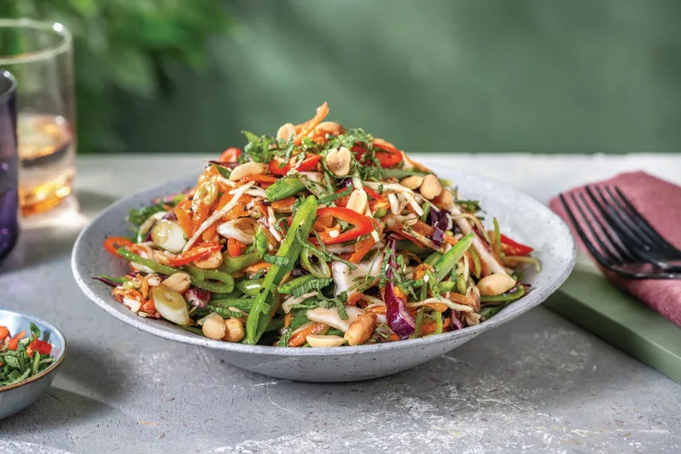

Crunchy Asian-Style Slaw

Description
This colourful Asian-style slaw is all about texture and flavour.
We've added all the crunch to our ready-to-go slaw mix, with pea pods and roasted peanuts.
Ingridients
- Pea pods (1 bag)
- Sping onion (1 bunch)
- Mint (1 bag)
- Red chilli (1/2)
- Slaw mix (1 bag)
- Roasted peanuts (1 packet)
- Soy sauce (1/2 tbsp)
- Olive oil
- Rice wine vinegar (1 tbsp)
Steps
-
- Trim and thinly slice the pea pods lengthways.
- Thinly slice the spring onion and red chilli (see ingredients) if using.
- Pick and thinly slice the mint.
-
- In a medium bowl, combine the Japanese dressing, rice wine vinegar, soy sauce and a drizzle of olive oil.
-
- Add the slaw mix, spring onion and the pea pods to the dressing and toss to combine.
-
- Transfer the slaw to a serving dish.
- Top with the roasted peanuts, mint and chilli to serve.
- Enjoy!